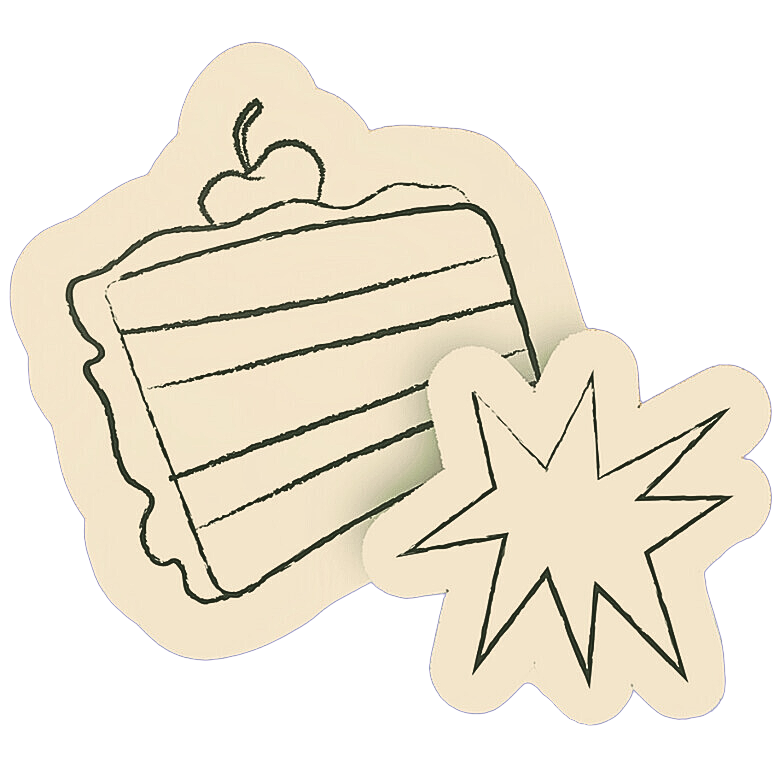

Inspirada nas receitas e lembranças de família, juntamos a tradição e a criatividade para criar pratos, bolos e salgados sob encomenda, uma coisa melhor que a outra.
Tudo artesanal, feito a quatro mãos, de mãe para filho, com ingredientes selecionados e um toque especial que só a FAVU tem!
Faça sua encomenda e vamos transformar seus momentos especiais em inesquecíveis!
